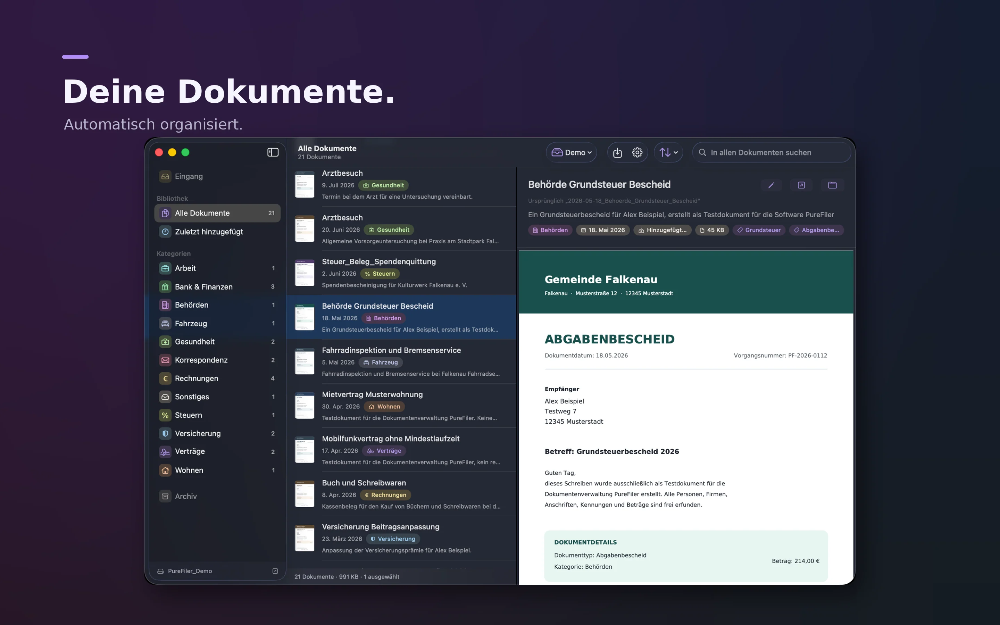
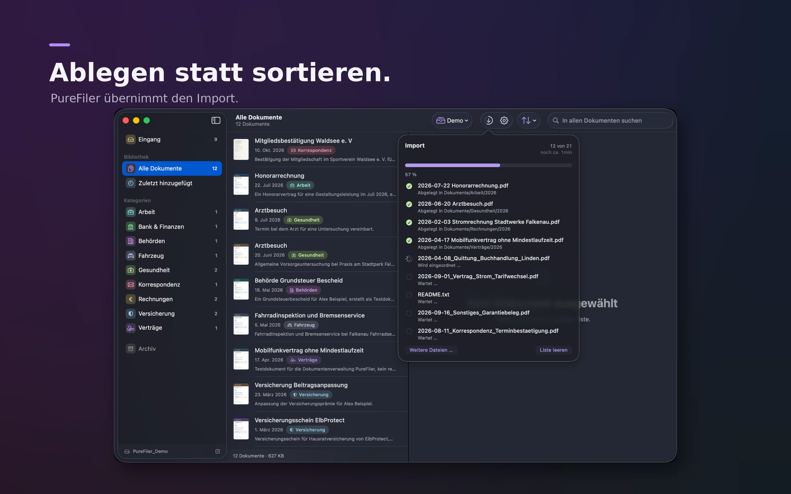
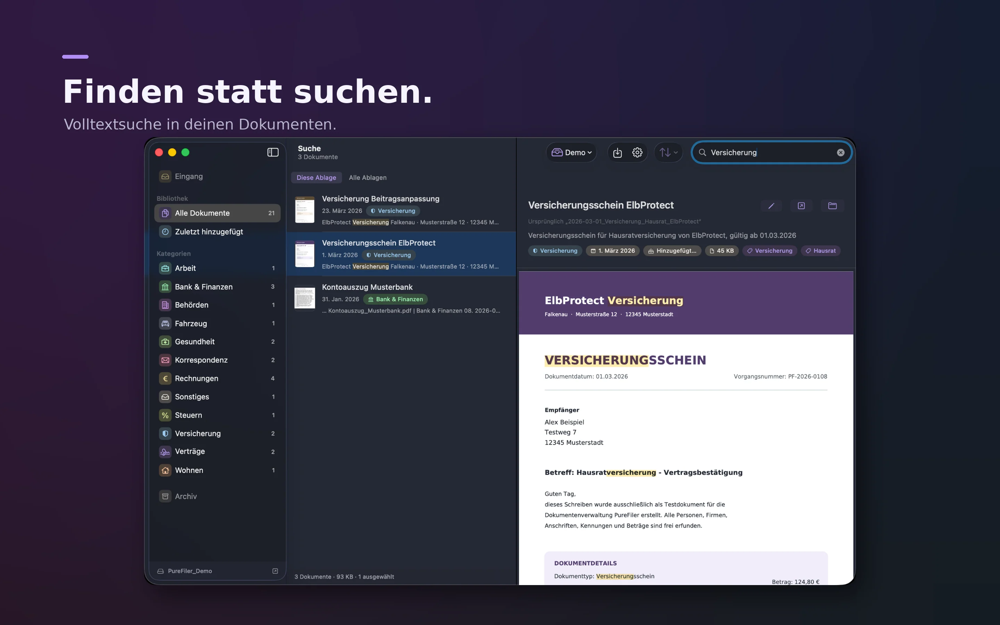
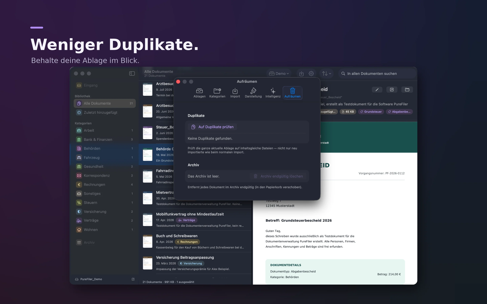
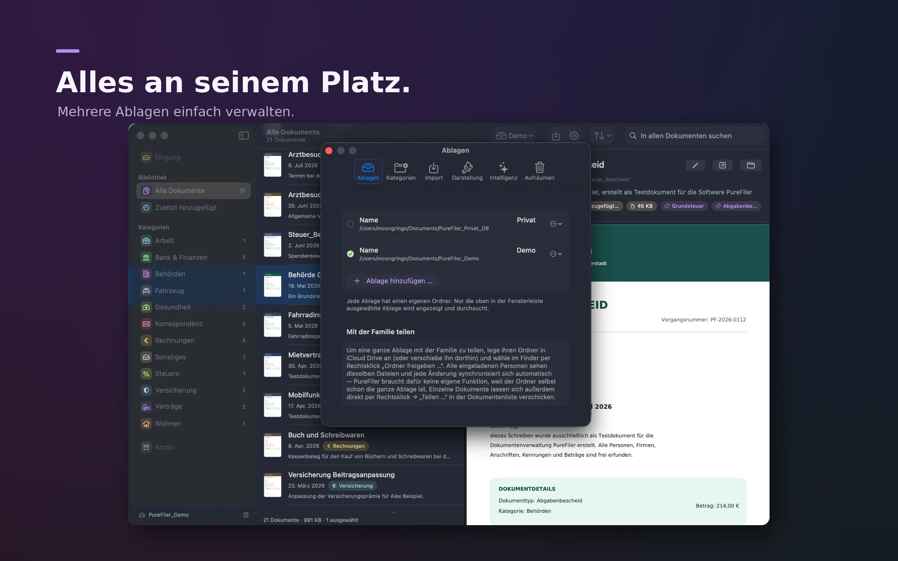

Texterkennung
Scans und PDFs durchsuchen – mit integrierter Texterkennung.
PureFiler liest Dokumente, benennt sie verständlich und sortiert sie in deine Ablage. Mit lokaler Texterkennung, intelligenter Kategorisierung und Volltextsuche.
Für macOS · Ohne Abo · Dokumentenanalyse auf deinem Mac

Scans und PDFs durchsuchen – mit integrierter Texterkennung.
Passende Titel und Kategorien werden automatisch erkannt.
Dokumente per Volltextsuche schnell wiederfinden.
PUREFILER IN AKTION
Echte Einblicke in die macOS-App – von der Dokumentenablage bis zur intelligenten Suche.





WIR HELFEN GERN
Schreib uns direkt oder schau in die häufigen Fragen.